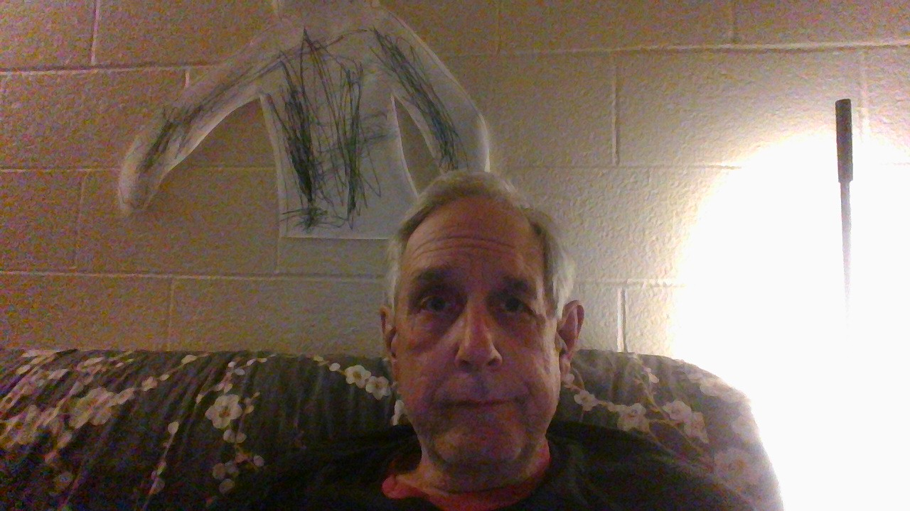

Kenyon Nelson
Web Developer and Designer

Creating websites for English speakers living in Japan
Work Experience
-
President Surety Laboratories, St. Louis, MO, USA
- English Teacher OBC, Tokyo, Japan
- Copywriter Sanrio, Tokyo, Japan
- President Everpure Japan, Atsugi, Japan
-
Wedding Minister Mandarin Oriental Hotel, Tokyo, Japan
Education
- Normandy High School 1968
- Emmaus Bible College 1969
- Barrington College 1974
Skills
- Development Languages: HTML, CSS, JavaScript
- Languages: Native English, Advanced Japanese
- Other Skills: Administration, Interpretation